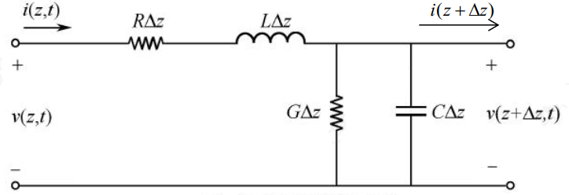
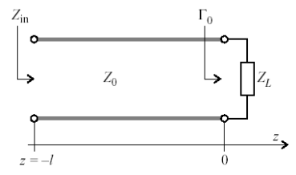

传输线理论
1. 传输线模型
设无限长均匀传输线为无穷多个无限小线元级联而成。

列出 KVL，KCL 方程，经过变换和求解得到传输方程的解： \[ \begin{cases}V(z)=V_0^+e^{-\gamma z}+V_0^-e^{\gamma z}\\I(z)=I_0^+e^{-\gamma z}+I_0^-e^{\gamma z}\end{cases} \]
传输方程详细求解过程
由 KVL，KCL 得到： \[ \begin{cases}V(z)&=R\Delta zI(z)+j\omega L\Delta zI(z)+V(z+\Delta z)\\ I(z)&=G\Delta zV(z+\Delta z)+j\omega C\Delta zV(z+\Delta z)+I(z+\Delta z)\end{cases} \] 令 \(\Delta z\to0\) ，经过变换得到传输方程： \[ \begin{cases}\frac{d^2V(z)}{d^2z}-\gamma^2V(z)=0\\\frac{d^2I(z)}{d^2z}-\gamma^2I(z)=0\end{cases} \] 其中：\(\gamma{=}\sqrt{\begin{bmatrix}R+j\omega L\end{bmatrix}\begin{bmatrix}G+j\omega C\end{bmatrix}}{=}\alpha{+}j\beta\)
- \(\gamma\)：复传播函数
- \(\alpha\)：衰减常数
- \(\beta\)：相位常数
相位常数 \(\beta\) 表示单位长度对应的相位，相位常数与一些变量的关系
波长：\(\lambda=\frac{2\pi}\beta\)
相速度：\(\nu_P=\frac{\omega}{\beta}=\lambda f\) ，相速度可以大于光速
传输方程的解为： \[ \begin{cases}V(z)=V_0^+e^{-\gamma z}+V_0^-e^{\gamma z}\\I(z)=I_0^+e^{-\gamma z}+I_0^-e^{\gamma z}\end{cases} \]
其中：
\(\gamma{=}\sqrt{\begin{bmatrix}R+j\omega L\end{bmatrix}\begin{bmatrix}G+j\omega C\end{bmatrix}}{=}\alpha{+}j\beta\)
\(V_0^+,V_0^-,I_0^+,I_0^-\) 为复常数，与传输距离 z 无关。由传输线边界条件确定。四个参数中只有两个是独立的（即由任意两个可以求出另外两个）。
方程中只有 \(z\) 是实数，其他均为复数。
令特征阻抗为：\(Z_{0}=\sqrt{\frac{R+j\omega L}{G+j\omega C}}\)
经过方程等式变换，传输方程的解也可写为： \[ \begin{cases}V(z)=V_0^+e^{-\gamma z}+V_0^-e^{\gamma z}\\I(z)=\frac{V_0^+}{Z_0}e^{-\gamma z}-\frac{V_0^-}{Z_0}e^{\gamma z}\end{cases}\tag{1} \]
\(Z_0=\sqrt{\frac{R+j\omega L}{G+j\omega C}}=r+jx=\frac{V_0^+}{I_0^+}=\frac{-V_0^-}{I_0^-}\)
2. 端接负载的无耗传输线
在实际射频电路中，传输线较短，损耗可以忽略，即 R=G=0
\(\gamma=j\beta=\sqrt{(R+j\omega L)(G+j\omega C)}=j\omega\sqrt{LC}\) 虚数
\(Z_0=\sqrt{\frac{\left(R+j\omega L\right)}{\left(G+j\omega C\right)}}=\sqrt{\frac LC}\) 实数

由方程（1），得到负载端： \[ \begin{cases}V_{0}^{+}=\frac{V_{L}}{2}(1+\frac{Z_{0}}{Z_{L}})\\V_{0}^{-}=\frac{V_{L}}{2}(1-\frac{Z_{0}}{Z_{L}})\end{cases}\tag2 \] 电压反射系数：\(\Gamma(z)=\frac{\text{反射波}}{\text{入射波}}=\frac{V_{0}^{-}e^{\gamma z}}{V_{0}^{+}e^{\gamma z}}=\frac{V_{0}^{-}}{V_{0}^{+}}e^{2\gamma z}\)
对无耗传输线：\(\Gamma(z)=\Gamma_{0}e^{j_{2}\beta z},\quad\Gamma_{0}=\Gamma(0)=\frac{V_{0}^{-}}{V_{0}^{+}}\)
由方程（2），负载端的反射系数：\(\Gamma_{0}=\frac{V_{0}^{-}}{V_{0}^{+}}=\frac{Z_{L}-Z_{0}}{Z_{L}+Z_{0}}\)
\(\Rightarrow Z_{L}=Z_{0}\frac{1+\Gamma_{0}}{1-\Gamma_{0}}\)
推广到任意点：\(\Gamma (z)=\frac{Z(z)-Z_0}{Z(z)-Z_0}\)
- 终端匹配：\(Z_{L}=Z_{0} \quad \Rightarrow \quad \Gamma_{0}=0\)
- 终端开路：\(Z_{L}=\infty \quad \Rightarrow \quad \Gamma_{0}=1\) （全反射）
- 终端短路：\(Z_{L}=0 \quad \Rightarrow \quad \Gamma_{0}=-1\) （全反射）
驻波比：\(SWR = \frac{|V_{\max}|}{|V_{\min}|} = \frac{1+|\Gamma_{0}|}{1-|\Gamma_{0}|}\)
\(\Rightarrow |\Gamma_{0}|=\frac{SWR-1}{SWR+1}\)
令 \(d=-z\)：
\(d\)：从右向左
\(z\)：从左向右
\(\Gamma(d)=\Gamma_{0}e^{-j2\beta d}\)
由方程（1）：\(Z_{d}=\frac{V(-d)}{I(-d)}=Z_{0}\frac{1+\Gamma(-d)}{1-\Gamma(-d)}\)
由该式子得到：
无耗传输线任意点的输入阻抗： \[ Z_{in}\equiv Z_{d}=Z_{0}\frac{Z_{L}+jZ_{0}\tan(\beta d)}{Z_{0}+jZ_{L}\tan(\beta d)} \] 阻抗匹配时：\(Z_{L}=Z_{0}\quad\Rightarrow\quad Z_{in}=Z_{0}\)，任意点的阻抗都为 \(Z_0\)
3. 终端短路的传输线
待更新